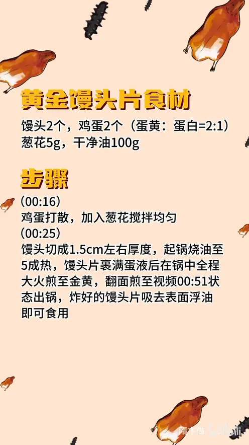

黄金馒头片
隋卞一做。馒头 2 个切成 1.5cm 厚片，鸡蛋 2 个按蛋黄蛋白 2:1 打散、加 5g 葱花；油烧至五成热，馒头片裹满蛋液后全程大火煎至两面金黄，出锅吸去浮油即可。
原视频：https://www.bilibili.com/video/BV1gjpje2EtF
食材
馒头、鸡蛋 等 4 样
| 类别 | 用料 | 用量 |
|---|---|---|
| 主料 | 馒头 | 2 个 |
| 主料 | 鸡蛋 | 2 个（蛋黄:蛋白 = 2:1） |
| 辅料 | 葱花 | 5g |
| 用油 | 干净油 | 100g |
步骤
- 调蛋液：鸡蛋打散，加入葱花搅拌均匀。
- 煎馒头片：馒头切成 1.5cm 左右厚度，起锅烧油至五成热，馒头片裹满蛋液后在锅中全程大火煎至金黄，翻面煎至两面金黄出锅，炸好的馒头片吸去表面浮油即可食用。
讲解要点
难度：★☆☆☆☆（几乎零失败，只要油干净、火够大）
为什么这么做
- 蛋黄蛋白 2:1：蛋黄多，蛋香足、颜色更金黄；蛋白多了只剩水汽，还带腥。
- 蛋液里加葱花：主要作用是去腥，顺带一点葱香。
- 馒头片切无名指粗细（约 1.5cm）：太薄煎完干硬，太厚中间吸不透蛋液、受热不均；这个厚度受热快、口感最好，也不粘锅。
- 油要干净、不能有重味：馒头和鸡蛋都极吃油味，油带腥或者炸过别的东西，成品就跟着带味；葱油也可以用。
- 五成油温下锅、全程大火：油温太低蛋液吸油、脱落，太高外焦里凉；鸡蛋必须在高温下才出那股香味——这是视频强调的第三个关键点。
- 出锅上下各垫一张吸油纸：吸掉浮油，吃着不腻。
容易翻车
- 火小：蛋液吸油、成品腥，这是最常见的失败。
- 切得太厚：外壳焦了，中间还软塌塌的。
- 蛋液没裹匀：有的地方发白，有的地方已经焦黑。
原片尾卡

原片文案
AI 字幕校准稿
小李去我店里边，发现我一片馒头片卖六块。炸馒头片不是那么好炸的，你要想把这馒头片炸得又香又没有腥味，就把这个视频看完，约含 30 年功力的黄金馒头片。
让馒头片香的第一步是鸡蛋的配比：两个蛋黄、一个蛋白，这样鸡蛋的香味会更足一点。第二步，再往里边加点葱花，主要是为了去腥。
馒头片切成无名指粗细，更容易受热，口感也最好，不粘锅。上火，干净油或者葱油都可以，就是不能有味儿太重的油。多炸的更好吃，你们在家做煎就行了，给你们省点油。
然后均匀地裹上蛋液，油温五成热下锅煎。第三个很重要的点，这个一定要全程大火——鸡蛋在高温作用下才能出现那种香味，火小了它一定会腥。出锅了，搁在这个吸油纸上面，上面也得盖一层吸油纸。油吸完以后就直接开炫了。
整理自「隋卞一做」系列视频，仅供个人学习。